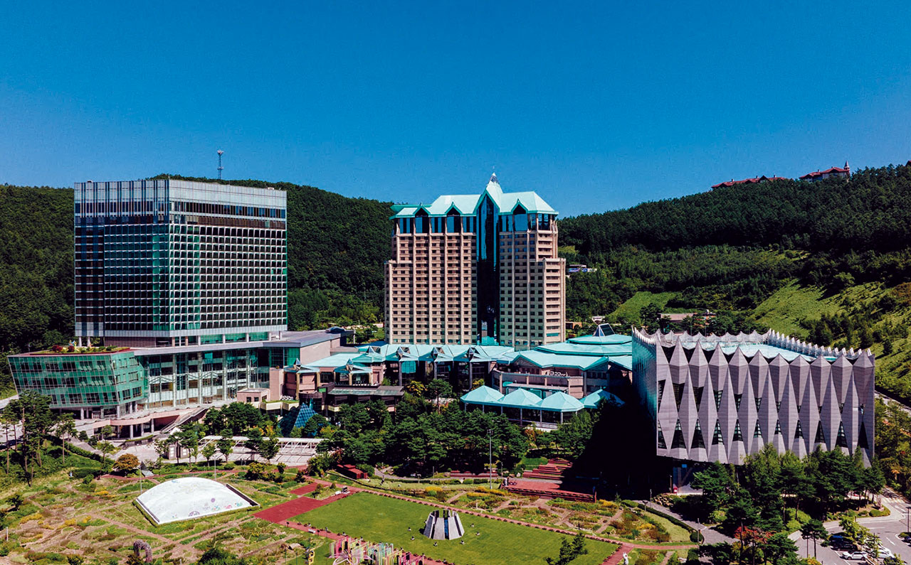
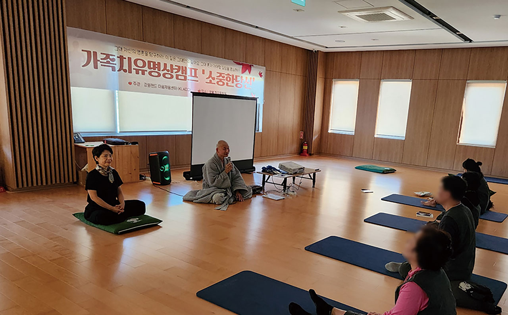
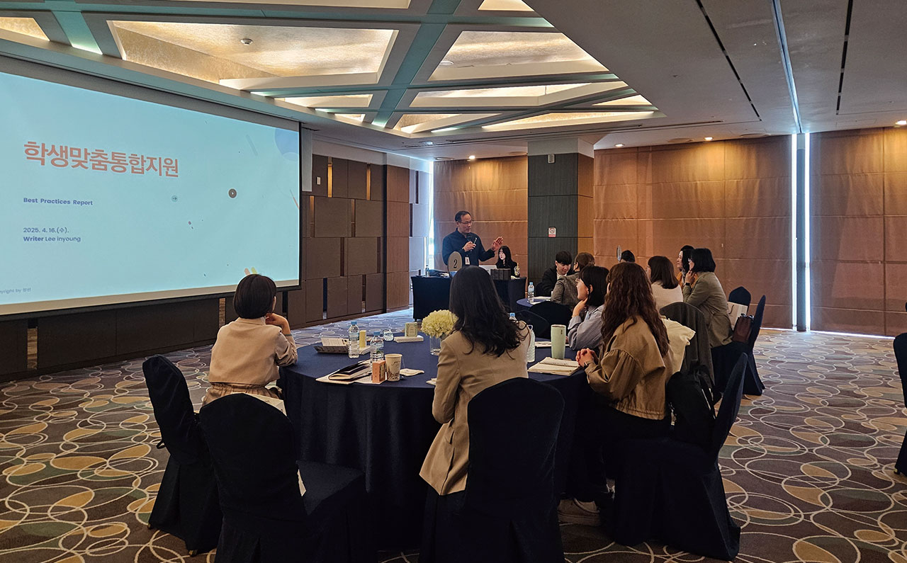
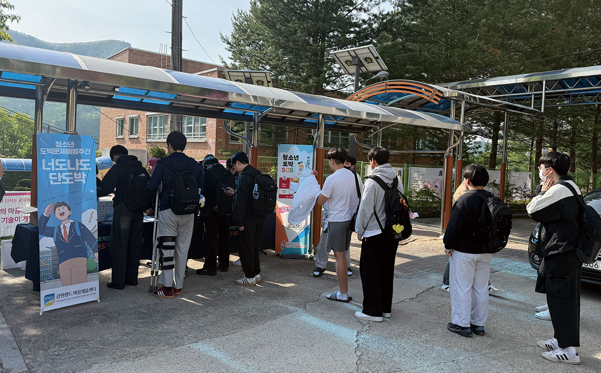
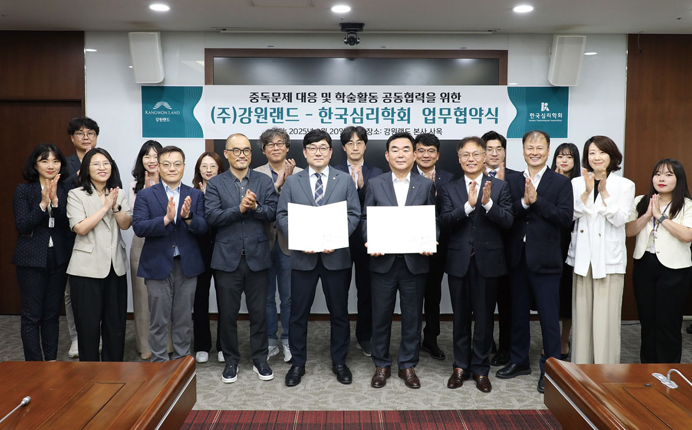
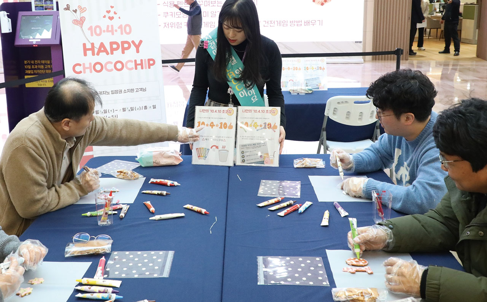

강원랜드가 사행산업통합감독위원회 주관 ‘2024년 사행산업 사업자
건전화평가’에서 9개 시행기관 중 S등급(1위)을 달성했다고 25일 밝혔다.
2023년 B등급(6위)에서 S등급(1위)로 크게 올랐다.
강원랜드는 평가 전 부문에서 높은 점수를 받았다. 전자카드 매출비중은
10.3%로 정부 목표(8.85%)를 처음으로 초과 달성했고, 전용머신 도입 등
전자카드 인프라 구축 및 이용 활성화 노력으로 2023년 대비 2배 증가한
수치다. 또 건전게임을 위한 ‘10일(출입일수)·4시간(게임
시간)·10%(게임금액)’ 가이드라인 마련과 건전게임 체험존 재정비로
이용객이 12.4% 증가했다. K-Green 건전관리시스템 운영을 통한 도박문제
자가진단 참여 고객도 7,968명으로 전년 대비 2.2배 늘었다. 불법도박 대응
성과도 두드러졌다. 일반시민 불법도박 모니터링단(KLIN) 발족, 카이스트와
업무협약을 통한 국내 최초 AI 기반 불법도박 탐지·분석 시스템 구축으로
온라인 불법도박 신고가 3,400건으로 전년 대비 6% 증가했다. 불법사이트
차단도 1,343건으로 16% 늘었다. 청소년과 군인 등 청년층의 불법도박
문제에 대해 사회적 인식제고를 위한 캠페인, 교육, 실태조사 등을 연중
지속적으로 실시한 점이 높은 평가를 받았다.
최철규 대표이사 직무대행은 “올해도 관계 기관과 협력체계를 공고히 해
제4차 사행산업 건전 발전 종합계획 정책 이행에 주도적 역할을 하겠다”고
밝혔다.

강원랜드 마음채움센터가 지난 3월 16일 카이스트 명상과학연구소 김은미
연구부교수와 공동 진행한 ‘가족치유명상캠프’ 효과성 연구가
한국명상학회지 제15호에 게재됐다고 밝혔다. 국내 사행사업자가 명상
전문기관과 치유 프로그램을 운영하고 효과성 연구 결과를 발표한 것은
처음이다.
2024년 영월 하이힐링원에서 6차례 진행된 캠프에는 108명이 참가했고,
단도박자 39명이 연구에 참여했다. 1박 2일간 바디스캔, 호흡명상,
먹기명상, 걷기명상, 자비명상 등 명상 훈련을 실시했다.
연구 결과 명상이 단도박자의 회복과정에서 정서적 안정과 자기 통제력을
증진시키는 핵심 도구로 작용함이 확인됐다. 기존 치료법의 한계를 넘어
중독자를 능동적 치료 주체로 인식하는 회복 패러다임을 반영한 점에서
의의가 있다.

강원랜드 마음채움센터가 지난 4월 16일 하이원 그랜드호텔 컨벤션타워에서 아동·청소년 실무자 연수를 시작으로 ‘청소년 중독예방 아카데미’를 본격적으로 운영한다고 밝혔다. 강원랜드 마음채움센터, 강원랜드 사회공헌재단 학교사회복지센터, 강원특별자치도 정선교육지원청이 공동 주최한 연수에는 정선군상담복지센터, 지역아동센터 등 36개 기관에서 약 45명의 실무자가 참여했다. 이번 행사를 시작으로 11월까지 약 8개월간 ‘청소년 중독예방 아카데미’가 운영된다. 청소년, 학부모, 교사, 사회복지사 등 현장 실무자를 대상으로 ▲청소년 중독예방교육 ▲학부모 및 실무자 역량강화 연수 ▲중독예방 선도학교 지정 및 운영 ▲예방 콘텐츠 및 매뉴얼 제작·배포 ▲동종기관 워크숍 등을 진행한다. 김대정 센터장은 “강원랜드 청소년 중독예방 아카데미는 아동청소년 뿐만 아니라 실무자들이 현장에서 직면할 수 있는 다양한 문제들을 다루고 있다”며 “우리 사회의 보배인 청소년을 보호하기 위해 앞으로도 최선의 노력을 다하겠다”고 말했다.

강원랜드 마음채움센터가 ‘청소년 도박문제 예방주간’을 맞아 폐광지역 청소년을 대상으로 농구대회, 등굣길 방문 캠페인 등 다양한 예방 활동을 진행했다고 지난 5월 19일 밝혔다. 이에 앞서 5월 10일 정선군 사북청소년장학센터 체육관에서는 ‘청소년 농구대회 연계 건전문화 캠페인’이 펼쳐졌다. 폐광지역 4개 시·군 중고등학생 및 학부모, 봉사자 등 150여 명이 참가해 3대3 농구대회와 함께 온라인 불법도박 근절 서약서 작성, 도박문제 선별검사(CPGI) 실시 등의 활동이 진행됐다. 또 5월 13일과 15일에는 태백 황지고등학교, 정선 사북고등학교에서 등굣길 캠페인을 전개했다. 청소년 도박문제에 대한 홍보물을 배포하고 자가진단과 상담정보를 제공했다. 김대정 센터장은 “청소년 도박문제는 단순 호기심에서 시작되지만 도박문제로 이어질 가능성이 높아 어른과 사회의 꾸준한 관심이 중요하다”고 밝혔다.

강원랜드가 지난 6월 20일 본사 행정동에서 한국심리학회와 중독문제 예방
및 정신건강 증진을 위한 업무협약을 체결했다. 협약식에는 최철규
강원랜드 대표이사 직무대행과 최훈석 한국심리학회장을 비롯한 양 기관
관계자들이 참석했다. 양 기관은 ▲중독·정신건강 공동연구 및 정책개발
▲임직원·고객 대상 전문 심리서비스 제공 ▲학술대회 공동개최 및 교류 확대
등 7개 분야에서 협력하기로 했다.
특히 강원랜드는 오는 8월 개최되는 ‘2025 한국심리학회 연차학술대회’에
공식 파트너로 참여한다. 이 자리에서 도박 관련 학술논문 발표와 우수
논문 포상, 특별세션이 마련될 예정이다. 최훈석 회장은 “도박중독은
개인의 문제가 아닌 사회 전체가 함께 풀어가야 할 심리적·공공적
과제”라며 “강원랜드와 함께 다양한 예방·개입 프로그램과 연구를 통해
실질적 변화로 이어지도록 노력하겠다”고 밝혔다. 최철규 직무대행은 “이번
협약은 강원랜드가 지향하는 책임 있는 공기업으로서 방향성과 철학을
보여주는 중요한 계기”라고 강조했다.

강원랜드 마음채움센터가 카지노 게임 과몰입 예방을 위한 체험형 프로그램
‘10·4·10 초코칩’을 운영해 이용객들로부터 긍정적인 반응을 얻고 있다.
지난 2월 13~14일 카지노 발권데스크에서 진행된 이번 프로그램은
참가자들이 직접 쿠키를 만들며 건전게임의 의미를 되새기는 방식으로
진행됐다.
‘10·4·10’은 강원랜드가 권장하는 저위험 게임 가이드라인으로, 연간
출입일수 10일, 1일 게임시간 4시간, 월 게임금액은 가구소득의 10% 이하를
뜻한다. 참가자들은 이 숫자 모양의 쿠키를 만들면서 자연스럽게 건전한
게임 습관에 대해 생각해보는 시간을 가졌다.
센터는 지난해 4월부터 고객의 카지노 출입빈도에 따라 3단계로 구분한
맞춤형 과몰입 예방 프로그램을 운영하고 있다. 프로그램은 공예,
명상요가, 산책 등의 활동부터 심층상담까지 다양하게 구성되어 있어,
카지노 이용자가 고위험군으로 발전하는 것을 사전에 차단하는 데 중점을
두고 있다.
김대정 센터장은 “지난해 4월부터 시작된 과몰입 예방 프로그램 참여자가
약 500명에 이르고 있으며 평가가 긍정적이다”라며 “독자적 이고 선도적인
제도와 프로그램 운영을 통해 우리 사회의 도박 중독 문제 예방에
앞장서겠다”고 밝혔다.
센터가 실시한 참가자 설문조사에 따르면, 프로그램 참여 후 문제 인식이
높아지고 건전게임의 필요성을 깨닫게 되었으며 스트레스가 감소하는 등
긍정적인 효과가 나타났다.